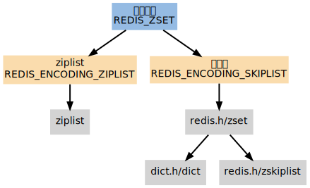
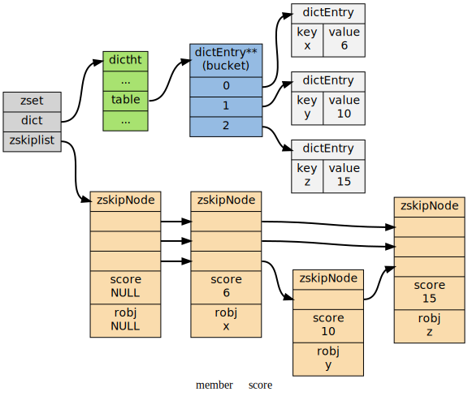

有序集
REDIS_ZSET 有序集 是 ZADD , ZCOUNT 等命令的操作对象， 它使用 REDIS_ENCODING_ZIPLIST 和 REDIS_ENCODING_SKIPLIST 两种方式编码：

编码
在通过 ZADD 命令添加第一个元素到空 key 时， 程序通过检查输入的第一个元素来决定该创建什么编码的有序集。如果 第一个 元素符合以下条件的话， 就创建一个 REDIS_ENCODING_ZIPLIST 编码的有序集：
- 服务器属性 server.zset_max_ziplist_entries 的值 大于 \(0\) （默认为 \(128\) ）
- 元素的 member 长度 小于 服务器属性 server.zset_max_ziplist_value 的值（默认为 \(64\) ）
否则，程序就创建一个 REDIS_ENCODING_SKIPLIST 编码的有序集
转换
对于一个 REDIS_ENCODING_ZIPLIST 编码的有序集， 只要满足以下 任一 条件， 就将它转换为 REDIS_ENCODING_SKIPLIST 编码：
- ziplist 所保存的 元素数量 超过 服务器属性 server.zset_max_ziplist_entries 的值（默认值为 \(128\) ）
- 新添加元素的 member 的长度 大于 服务器属性 server.zset_max_ziplist_value 的值（默认值为 \(64\) ）
ziplist
当使用 REDIS_ENCODING_ZIPLIST 编码时， 有序集将元素保存到 ziplist 数据结构里面。其中：
- 每个有序集元素以 两个相邻的 ziplist 节点 表示：
- 第一个节点保存元素的 member 域
- 第二个元素保存元素的 score 域
- 多个元素之间按 score 值 从小到大 排序
- 如果两个元素的 score 相同， 那么按 字典序 对 member 进行对比， 决定那个元素排在前面， 那个元素排在后面
|<-- element 1 -->|<-- element 2 -->|<-- ....... -->| +---------+---------+--------+---------+--------+---------+---------+---------+ | ZIPLIST | | | | | | | ZIPLIST | | ENTRY | member1 | score1 | member2 | score2 | ... | ... | ENTRY | | HEAD | | | | | | | END | +---------+---------+--------+---------+--------+---------+---------+---------+ score1 <= score2 <= ...
虽然元素是按 score 域有序排序的， 但对 ziplist 的节点指针只能 线性 地移动， 所以在 REDIS_ENCODING_ZIPLIST 编码的有序集中， 查找 某个给定元素的复杂度为 \(O(N)\)
每次执行 添加/删除/更新 操作都需要执行一次 查找 元素的操作， 因此这些函数的复杂度都不低于 \(O(N)\)， 至于这些操作的实际复杂度， 取决于它们底层所执行的 ziplist 操作
skiplist
当使用 REDIS_ENCODING_SKIPLIST 编码时， 有序集元素由 redis.h/zset 结构来保存：
/* * 有序集 */ typedef struct zset { dict *dict; // 字典 zskiplist *zsl; // 跳跃表 } zset;
zset 同时使用 字典 和 跳跃表 两个数据结构来保存有序集元素。其中：
- 元素的 member 由一个 redisObject 结构 表示
- 而元素的 score 则是一个 double 类型的浮点数
- 字典和跳跃表两个结构通过将 指针共同指向这两个值 来节约空间 （不用每个元素都复制两份）
下图展示了一个 REDIS_ENCODING_SKIPLIST 编码的有序集：

通过使用 字典 结构， 并将 member 作为 键 ， score 作为 *值*， 有序集可以在 \(O(1)\) 复杂度内：
- 检查 给定 member 是否存在 于有序集（被很多底层函数使用）
- 取出 member 对应的 score 值 （实现 ZSCORE 命令）
另一方面， 通过使用 跳跃表 ， 可以让有序集支持以下两种操作：
- 在 \(O(\log{N})\) 期望时间 \(O(N)\) 最坏时间内根据 score 对 member 进行 定位 （被很多底层函数使用）
- 范围性 查找 和 处理 操作，这是（高效地）实现 ZRANGE , ZRANK 和 ZINTERSTORE 等命令的关键
通过同时使用字典和跳跃表， 有序集可以高效地实现按成员查找和按顺序查找两种操作